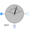
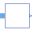

CurrentQuasiRMSSensorContinuous quasi current RMS sensor for multi phase system |

|
Diagram

Information
This information is part of the Modelica Standard Library maintained by the Modelica Association.
This sensor determines the continuous quasi RMS
value of a multi phase current system, by averaging the phase RMS current phasors i.
I = sum({'abs'(i[k]) for k in 1:m})/m
See also
ReferenceSensor, FrequencySensor, PotentialSensor, VoltageSensor, VoltageQuasiRMSSensor, CurrentSensor, PowerSensor, MultiSensor
Connectors (3)
| plug_p |
Type: PositivePlug Description: Positive quasi-static polyphase plug |
|
|---|---|---|
| plug_n |
Type: NegativePlug Description: Negative quasi-static polyphase plug |
|
| I |
Type: RealOutput Description: Continuous quasi average RMS of current |
Components (6)
| v |
Type: ComplexVoltage[m] Description: Complex voltage |
|
|---|---|---|
| i |
Type: ComplexCurrent[m] Description: Complex current |
|
| plugToPins_p |
Type: PlugToPins_p |
|
| plugToPins_n |
Type: PlugToPins_n |
|
| currentSensor |
Type: CurrentSensor[m] |
|
|  | quasiRMS |
Type: QuasiRMS |
Used in Examples (14)
|
Modelica.Electrical.QuasiStationary.MultiPhase.Examples |
|
|
Modelica.Magnetic.QuasiStatic.FundamentalWave.Examples.BasicMachines.InductionMachines Characteristic curves of Induction machine with squirrel cage |
|
|
Modelica.Magnetic.QuasiStatic.FundamentalWave.Examples.BasicMachines.InductionMachines Induction machine with squirrel cage started directly on line (DOL) |
|
|
Modelica.Magnetic.QuasiStatic.FundamentalWave.Examples.BasicMachines.InductionMachines Induction machine with squirrel cage starting Y-D |
|
|
Modelica.Magnetic.QuasiStatic.FundamentalWave.Examples.BasicMachines.InductionMachines Induction machine with squirrel cage starting with transformer |
|
|
Modelica.Magnetic.QuasiStatic.FundamentalWave.Examples.BasicMachines.InductionMachines Induction machine with squirrel cage and inverter driving a conveyor |
|
|
Modelica.Magnetic.QuasiStatic.FundamentalWave.Examples.BasicMachines.InductionMachines Induction machine with squirrel cage and losses |
|
|
Modelica.Magnetic.QuasiStatic.FundamentalWave.Examples.BasicMachines.InductionMachines Steady-state initialization of induction machine with squirrel cage |
|
|
Modelica.Magnetic.QuasiStatic.FundamentalWave.Examples.BasicMachines.InductionMachines Characteristic curves of induction machine with slip rings |
|
|
Modelica.Magnetic.QuasiStatic.FundamentalWave.Examples.BasicMachines.InductionMachines Starting of induction machine with slip rings |
|
|
Modelica.Magnetic.QuasiStatic.FundamentalWave.Examples.BasicMachines.SynchronousMachines Permanent magnet synchronous machine operated at mains with step torque load |
|
|
Modelica.Magnetic.QuasiStatic.FundamentalWave.Examples.BasicMachines.SynchronousMachines Test example: PermanentMagnetSynchronousMachine fed by current source |
|
|
Modelica.Magnetic.QuasiStatic.FundamentalWave.Examples.BasicMachines.SynchronousMachines Test example: PermanentMagnetSynchronousMachine, investigating maximum torque per Amps |
|
|
Modelica.Magnetic.QuasiStatic.FundamentalWave.Examples.BasicMachines.SynchronousMachines Test example: Synchronous reluctance machine fed by current source |